OUART Studio
以绘画为起点，陪伴儿童与成人建立长期创作能力。
初艺 OUART 专注成人油画、少儿综合美术与模型场景制作，用清晰的课程结构、 真实的作品展示和每日更新的艺术内容，支持不同阶段的艺术学习与创作实践。
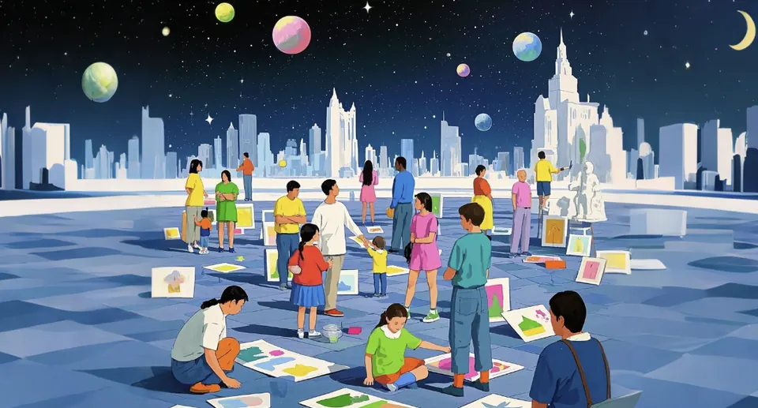

用马维尔《卢森堡花园喷泉》练习外框边距、共享中轴与内凹暗框
先比较纸页、照片和建筑的逐级边框，再以共享中轴套合山花、壁龛与水池，并把内凹空间归并成暗形。

用德穆斯《孤挺花》练习先浅后深、透明叠色与保留纸白
先用淡洗安排花、叶和背景，再在干燥色层上逐次加深，并以纸白和窄浅边保持清楚交叠。

用巴托尔迪《自由照耀世界》练习地平线、汇聚水道与尺度递减
先以地平线稳定全景，再让两侧岸线向远方开口收拢，并用船只与城市细节的尺度递减校验距离。

用玛雅《坐姿贵族贝壳饰板》练习连续外轮廓、交叠断点与线条轻重
先以连续外轮廓锁定坐姿，再在手、海螺和肢体交叠处停线，并用轻重差异区分主体与周围小图形。

用杜米埃《鉴赏家》练习头胸关系、交叠轮廓与明暗团块
先用头、胸与膝搭出后靠姿态，再以少量交叠边线说明前后，并把碎线归并成连续明暗团块。

用拉苏里王朝星盘练习同心圆骨架、放射校准与叠层断点
先以共享圆心稳定多层刻度，再用少量放射线校准方向，并靠线条粗细与断点分清活动部件和底层网格。

用广重《大桥骤雨》练习桥面斜向、成组雨线与前倾姿态
先以宽阔桥面稳定空间，再让成组斜雨与桥身交叉，并用小人物的前倾姿态回应骤雨力量。

用泰国藏经柜练习家具外框、金色剪影分组与暗色通道
先用硬朗外框稳定柜体，再把人物归成大小不同的金色亮组，并以暗色间隔连接观看路线。

用毛利绿石人形坠练习整体剪影、内部负形与不对称对位
先压出厚实的整体剪影，再把臂内与下部孔洞当作形来测量，并以横向对位保留左右差异。

用湿婆舞王像练习环形边界、动作轴线与落脚支点
先以圆环限定动作范围，再用躯干与四肢长轴展开舞姿，并让重心回到唯一落脚支点。

用伊迪亚王后吊坠面具练习中轴定位、点列疏密与外缘重复
先用中轴稳住五官，再把额上小圆点与外缘装饰归成尺度不同、疏密分明的重复层次。

用叶欣《山水》练习近景密线、中景留白与远山淡墨
把最密的线集中在近岸屋舍与树石，以横向留白展开水面，再让最大主峰以浅线自然后退。

用哈比布拉《群鸟集会》练习主群、支群与连续流向
先以中央孔雀锁定视觉锚点，再把邻近鸟类归成疏密不同的支群，并用溪流和地势串起观看路线。

用高丽青瓷《双童莲纹碗》练习口沿椭圆、中心校准与凹面明暗
先画稳碗口与内底的同心关系，再用轻明暗托出凹面，让双童和莲纹顺着碗壁展开。

用莫切《衬衣》练习衣片边界、阶梯路径与下缘收边
先让服装外轮廓和开口稳定，再把几何化动物归纳成连续折线路径，并用较小重复单元限定下摆。

用迈布里奇《运动中的动物姿态》练习躯干基线、落地支撑点和动作关键帧
以共同基准稳定十二格主体，再从落地支撑、后蹬与腾空的差异中提炼能说明运动阶段的关键姿态。

用埃内亚·维科《犀牛》练习外轮廓、搭接边界与顺形纹理
先让整体轮廓承受重量，再以边线截断分清前后壳片，用顺形纹理补充坚硬而圆厚的体积。

用伊朗《凤凰纹瓷砖》练习主曲线、重复单元和疏密层级
让凤凰长尾成为贯穿画面的运动主线，再用不同尺度的羽片、云头和花叶组织繁密装饰。
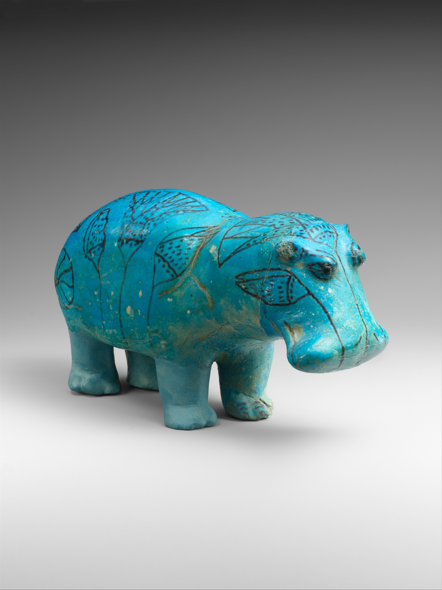
用古埃及《河马“威廉”》练习圆厚主块、绕体弧带与边缘截断
先立住低矮圆厚的身体，再让装饰线纹顺着曲面转向，并以疏密和截断把平面纹样贴回体积。
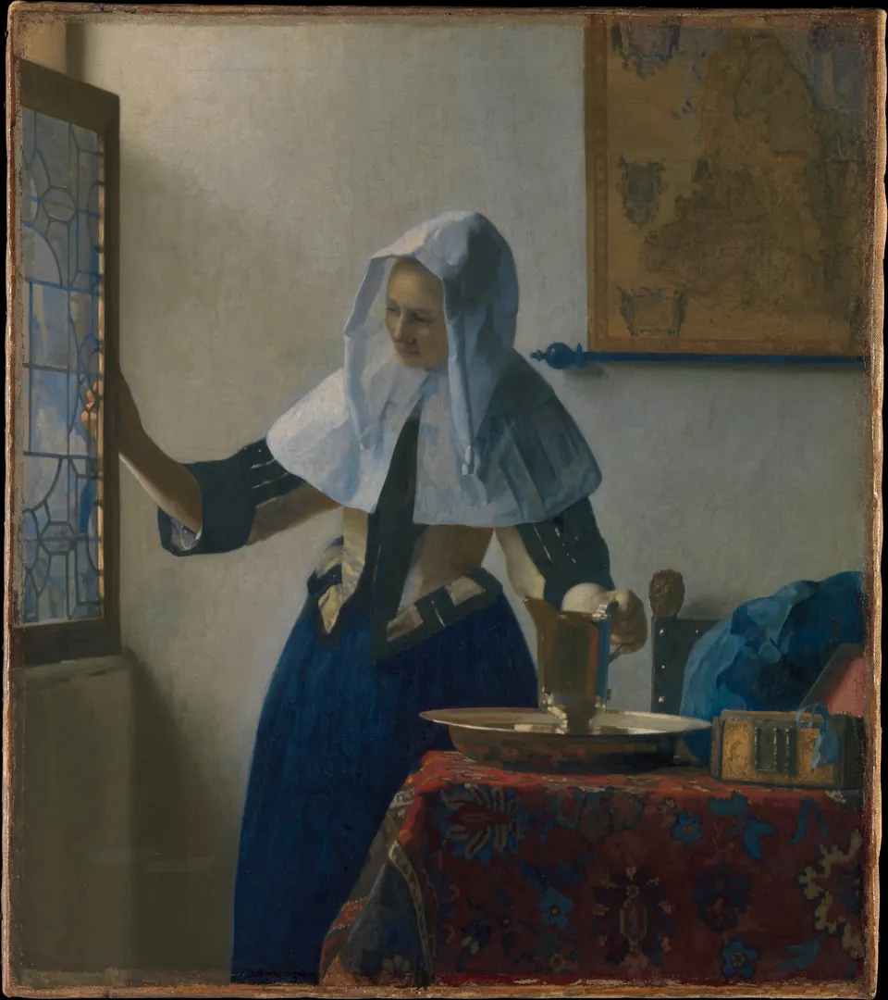
用维米尔《持水罐的年轻女子》练习结构硬边、转面软边与亮部消失边
用少量硬边确认窗、桌与器物节点，让柔和转面和消失边把人物留在同一片室内光中。
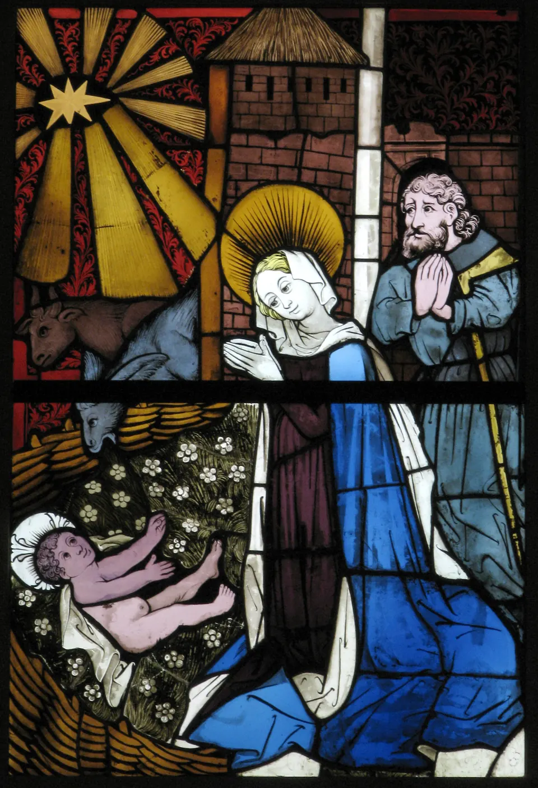
用德国《耶稣诞生彩窗》练习三档明暗、铅线分区与小亮形焦点
先归并大明暗，再让每条铅线成为相邻色块的共同边界，并以少量亮区收住人物焦点。
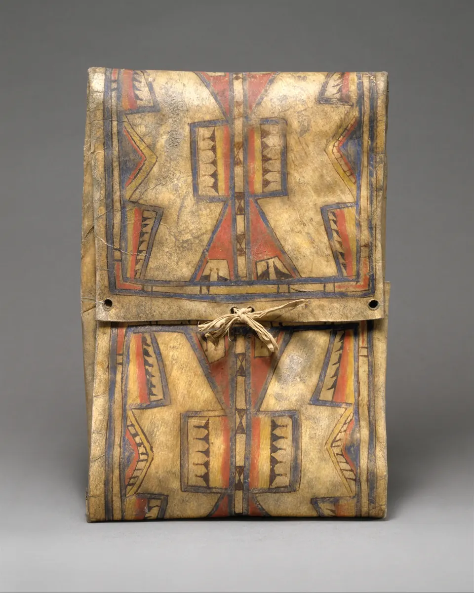
用夏延族《Parfleche 生皮包》练习外框中轴、三角折面与系带节点
先稳定包袋外框，再把斜线准确接到边缘节点，并用系带说明折面怎样闭合。
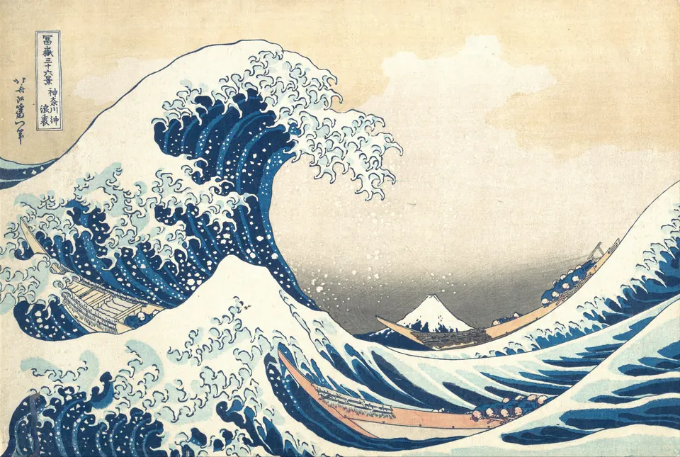
用葛饰北斋《神奈川冲浪里》练习前景巨浪、中景船只与远景富士山的三级尺度
先以巨浪建立前景，再让船只顺着水势进入中景，并以安静的小富士山收住远景，画出清楚空间。
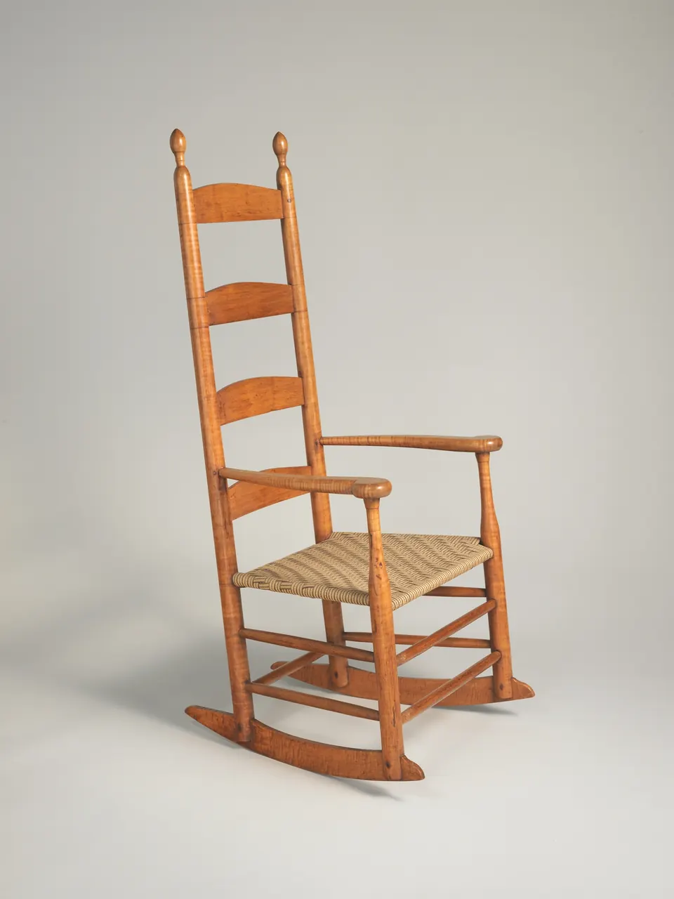
用夏克《摇椅》练习承重框架、连接节点和连续底弧
先把靠背、座面和支腿连成承重框架，再以清楚节点连接木件，并用长缓底弧画稳摇动中的家具。
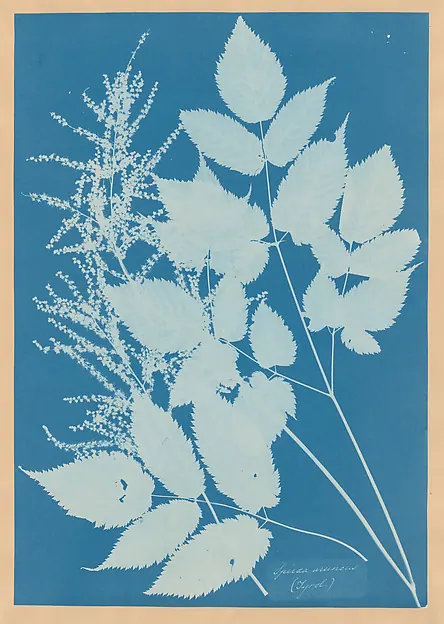
用安娜·阿特金斯《Spiraea aruncus》练习主枝轴、分叉角度和叶簇间隙
先连接植物的生长主线，再改变侧枝方向，并用深色背景间隙分开密集叶簇，让细碎形态保持清楚层次。
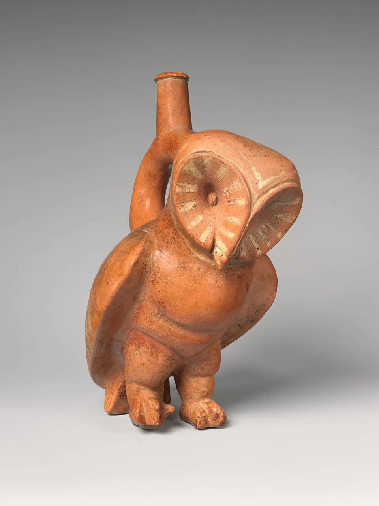
用莫切《猫头鹰马镫口瓶》练习中轴、轮廓转折和曲面明暗
先把动物形象与瓶身放回共同中轴，再用肩腹宽窄和随弧面压缩的纹理画出圆厚陶器体积。
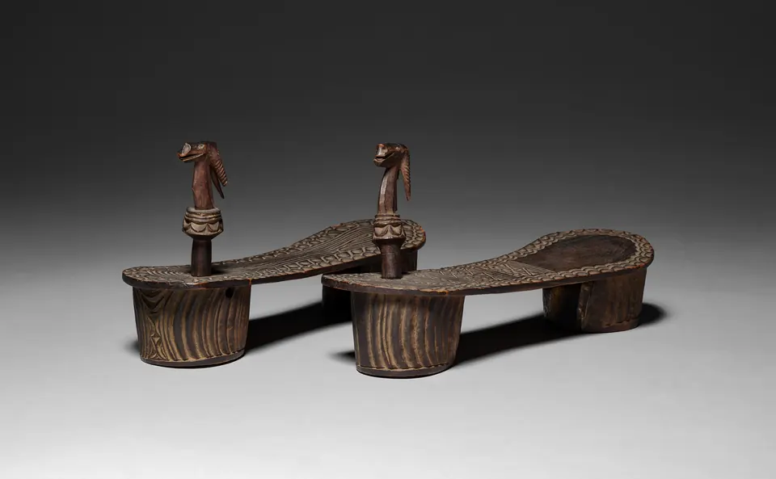
用中非木屐练习共同基线、轮廓差异和装饰定位
先比较一对器物的端点与空隙，再把趾柱和纹样放回结构位置，画清相似形制中的真实差异。
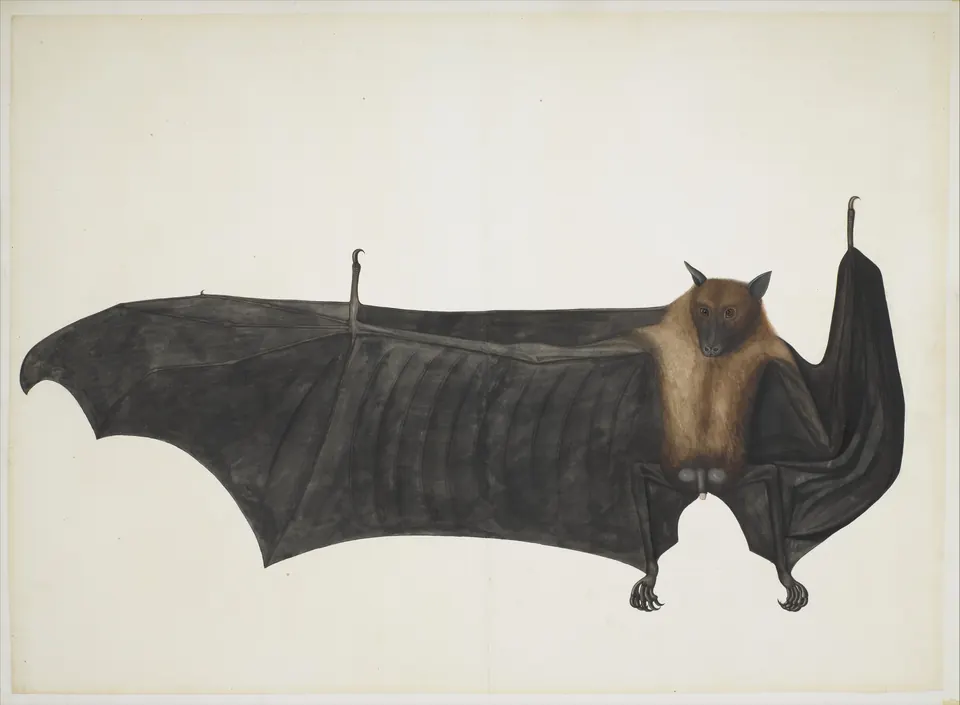
用《大印度果蝠》练习身体锚点、放射长线和翼膜扇区
让两翼从同一个身体锚点展开，再以扇区宽窄、转折和遮挡，画清翼膜的一展一收。
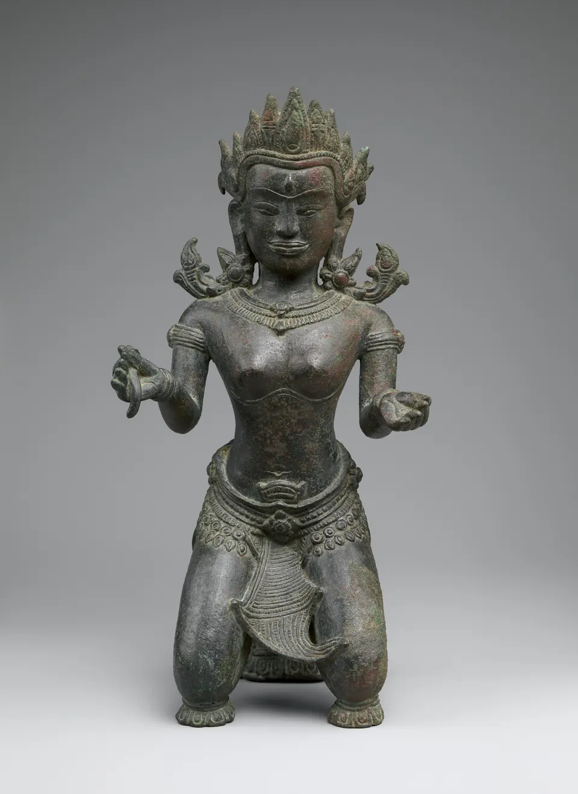
用吴哥时期《跪姿女神》练习躯干轴、膝部支点和折线关节
先让躯干形成完整重量，再检查重心是否落在低位支点上方，并用明确关节转折画稳跪姿。
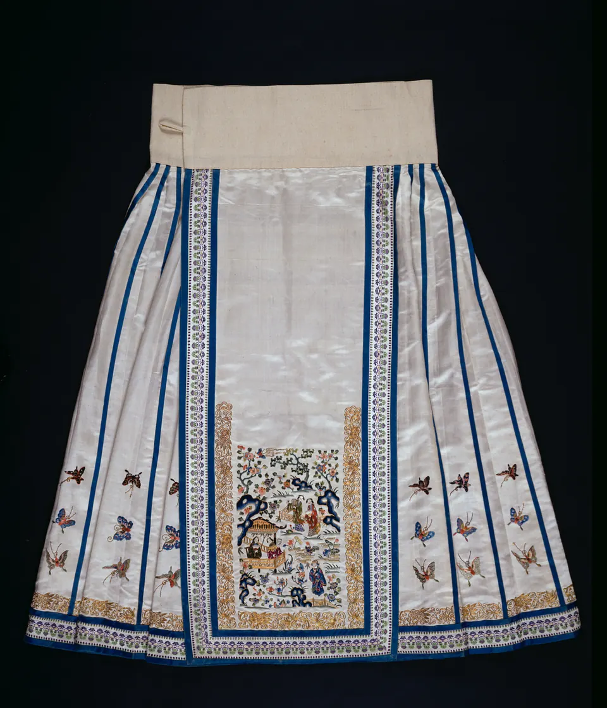
用清代女裙练习中央主面板、竖向分带和下缘重复
把最密的图像收进中央面板，以随裙幅展开的竖线建立节奏，再用连续底边连接左右装饰。
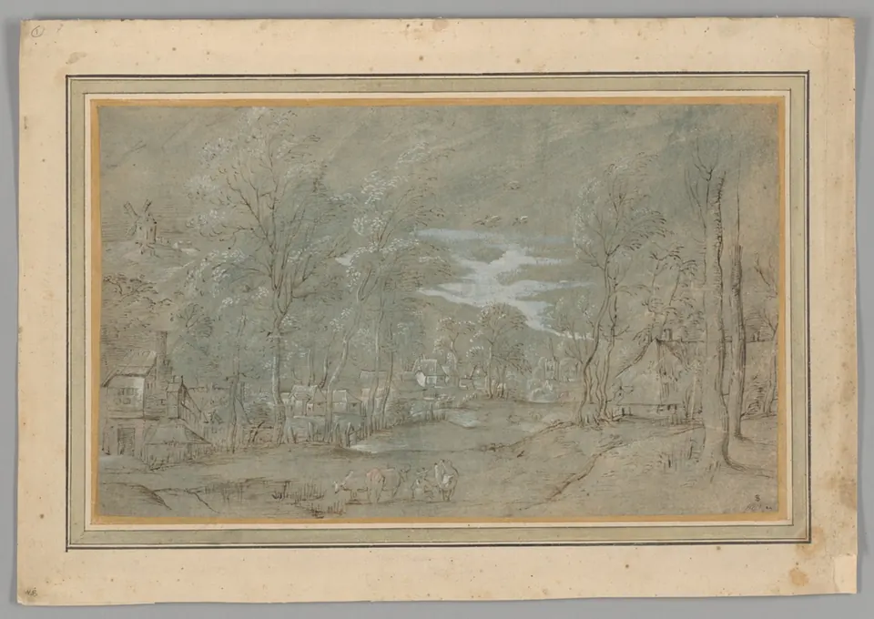
用《树林中的村庄》练习有色纸中间调、暗线与白色提亮
让纸色承担中间值，只添加结构暗线和少量受光白点，用三档明度画出树林与村庄的空间。

用奥斯曼伊兹尼克《清真寺灯》练习悬挂点、受力中线与环耳遮挡
先建立悬挂受力三角，再检查器物重心，并用环耳的前后遮挡画稳垂吊结构。

用曼加伊亚《仪式用锛》练习比例分段、接合区与材质笔触
先画清长柄、绑绳与石刃的长度关系，再用三类笔触区分木、纤维和石材，让复合工具的连接结构一目了然。

用玛雅《王室女性浮雕板》练习外轮廓、三档线重与凹面留白
先稳住人物的大形，再分开部件与表面纹样，用清楚的线面层级读懂复杂浅浮雕。
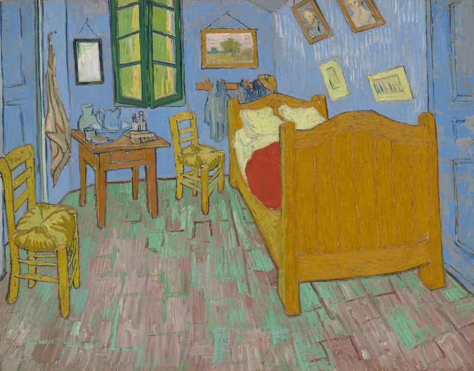
用文森特·梵高《卧室》练习大色区、五色限制与冷暖边界
先分开墙、地和家具，再让有限的主色在不同物件间重复，用清楚色区把丰富的室内细节组织起来。

用《进献供品的诺姆神祇》练习头部基线、脚部基线与步距变化
先统一一队人物的上下高度和前进方向，再用收放交替的步距，让并列人物形成连续而不机械的行进节拍。

用《伊约巴·伊迪亚吊坠面具》练习中央面形、同心轮廓与重复单元
先画稳正面面孔，再建立贴脸边缘与外层冠饰，并用大小变化把丰富装饰收进由内向外的清楚秩序。

用《威尼斯鸟瞰图》练习三级尺度、线条密度和城市层级
先看清城市与水域，再用大锚点、中分区和小纹理组织细节，让复杂鸟瞰图从远到近都能读懂。

用《七宝山图》练习跨屏主线、边缘接续和疏密停顿
先让山势跨过分隔连续生长，再用疏密段落控制长画面的重音与呼吸，把多格画面连成一个整体。

用《门前的黑人骑手》练习门洞框景、主体剪影和关键边缘
先用建筑门洞集中画面，再归并人马深色形，并让轮廓有显有隐，把主体从背景中自然托出来。

用东北昆士兰《雨林盾》练习长形外轮廓、纵向通路与错位停顿
先用长线连接上下，再让短线错开停顿并改变疏密，把狭长画面组织得连贯、有层次。

用歌川广重《大桥安宅骤雨》练习雨线疏密与空间分层
先统一雨线方向，再用成束与停顿改变密度，同时保留桥、河和远岸三层，让骤雨密集而空间仍然清楚。

用印度青铜时代《拟人形器》练习中轴、负形和抽象轮廓
先用中轴比较左右重量，再把三个空白当作形来画，让少量轮廓稳定、清楚，又保留真实的不对称。

用廷比沙肖肖尼《罐形篮》练习器形轮廓、横向分带和纹样压缩
先用最宽处和收口立住罐形，再让横带与图形跟着弧面转动，把平面装饰画出圆鼓体积。

用泰国《帕玛莱生平故事图册》练习场景分组、动作方向和重复线索
先把人物收成清楚的场景组，再用姿态与角色特征连接前后，让三幕小故事读起来更顺。

用楚文化《鹤与蛇》练习遮挡层级、轮廓接续和线条轻重
先分清前后，再沿中断两侧寻找形体的连续方向，让复杂穿插清楚而不被表面纹饰盖住。

用库巴《拉菲草刺绣绒面布》练习重复骨架、错位变化和边缘截断
先建立几何形的家族关系，再在可预测处制造变化，并用纸边切口让纹样向画外继续生长。

用丹尼尔·帕布斯特《柜》练习家具速写里的中轴线、分区比例和装饰节奏
先立中轴，再拆大分区，最后只补关键细节，复杂柜体、书架和立面会比一开始就追花纹更稳。

用扬·利文斯《书籍静物》练习深色静物里的大暗面归并、前后层次和少量高光
先把书堆和器皿压成稳定的大暗面，再整理遮挡关系，最后只把关键材质提亮，画面会更集中。

用梅斯卡拉《建筑模型》练习建筑体块概括、门洞比例和转折明暗
先稳住整体轮廓，再比较门洞与实墙的关系，最后用简单明暗把小建筑的体积和层次画清楚。

用《勃艮第公爵菲利普墓上的哀悼者》练习披袍人物里的布褶分组、受力方向和暗面概括
先把布料压成几大块垂坠关系，再找收束点和连续大影子，让被遮住的人体也能站稳、走得动。
用《湾流》练习海面里的大斜线构图、波浪分组和主体聚焦
先抓船和海流的整体倾斜趋势，再把浪头压成前中后几组，最后用包围关系把主体稳稳托住。

用《The Steerage》练习多人场景里的对角线分区与黑白秩序
先抓主斜线和上下分层，再把人物压成几组明暗块，让复杂人群先稳定下来，再逐步补充局部。

用《花间双鸟纹盘》练习圆形构图里的疏密节奏
先找回旋主线，再安排花叶和双鸟的穿插位置，用勾线把色块和形体收紧。

用《吊桥》练习重复透视与空间层级
先把桥面、台阶、拱门和亮口分成前中后几层，再用重复元素和明暗聚焦把复杂空间稳稳拉深。

用《受威胁的天鹅》练习 S 形主线与负形观察
先抓脖颈到头部的动作主线，再检查翅膀外缘和空白形，把动物姿态画得更紧、更有爆发力。
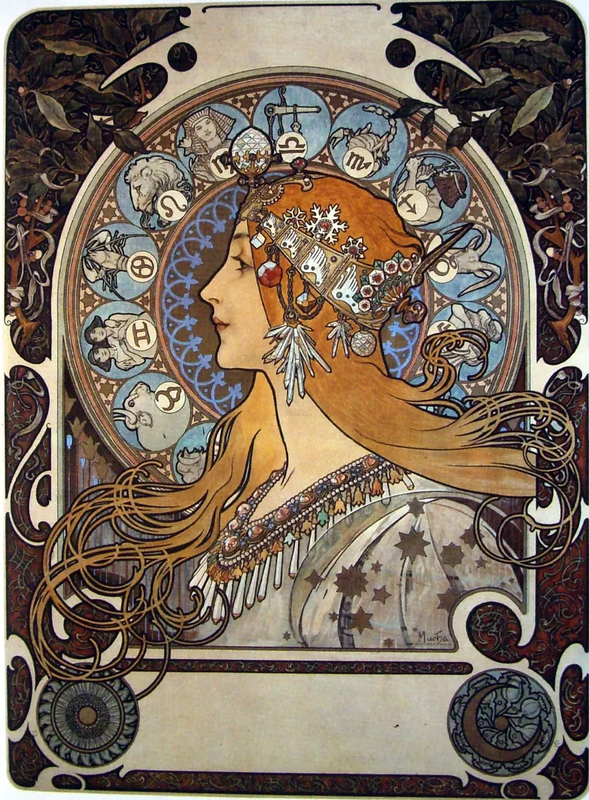
用《黄道带》练习竖构图里的装饰节奏
先立主轴，再安排重复曲线和边框收口，让花纹丰富的画面仍然稳、紧、清楚。
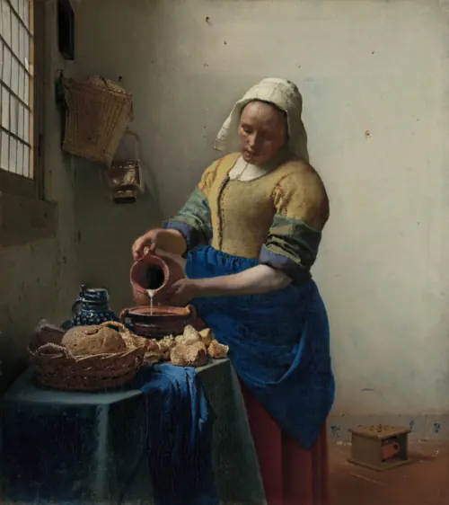
用《倒牛奶的女仆》练习单侧窗光下的体积分组
从受光区和背光区的大关系开始，再整理亮部冷暖与边缘松紧，画出安静、结实而不零碎的室内体积。
用《青年库罗斯大理石像》练习正面站姿的重量轴线
从中轴线、承重腿和身体大块面入手，学会把看似对称的人物站姿画得稳而不板。
OUART Studio
从观察与绘画到完整创作，初艺把艺术学习整理成清晰、持续的成长路径。
课程帮助学习者建立观察、造型、色彩和空间意识；作品集呈现成人与少儿创作成果； 每日一画从古今中外视觉艺术中提炼知识与练习方法，让学习可以持续发生。
课程体系
线上成人油画、线下综合美术、模型场景制作和艺术之旅计划。
学习成果与作品 archive作品集
成人绘画、少儿美术、模型场景作品按系列整理展示。
名作、知识与练习方法
每日一画
从古今中外的视觉艺术中提炼构图、造型、色彩与观察方法。
Contact
想学习绘画、咨询少儿课程，或讨论作品与艺术项目，可以直接联系初艺。
成人油画、少儿美术、模型场景制作和浮雕绘画都可以根据学习目标与作品方向进行沟通。 如果你有具体主题、年龄阶段或作品需求，也可以先整理成简短说明。
联系初艺